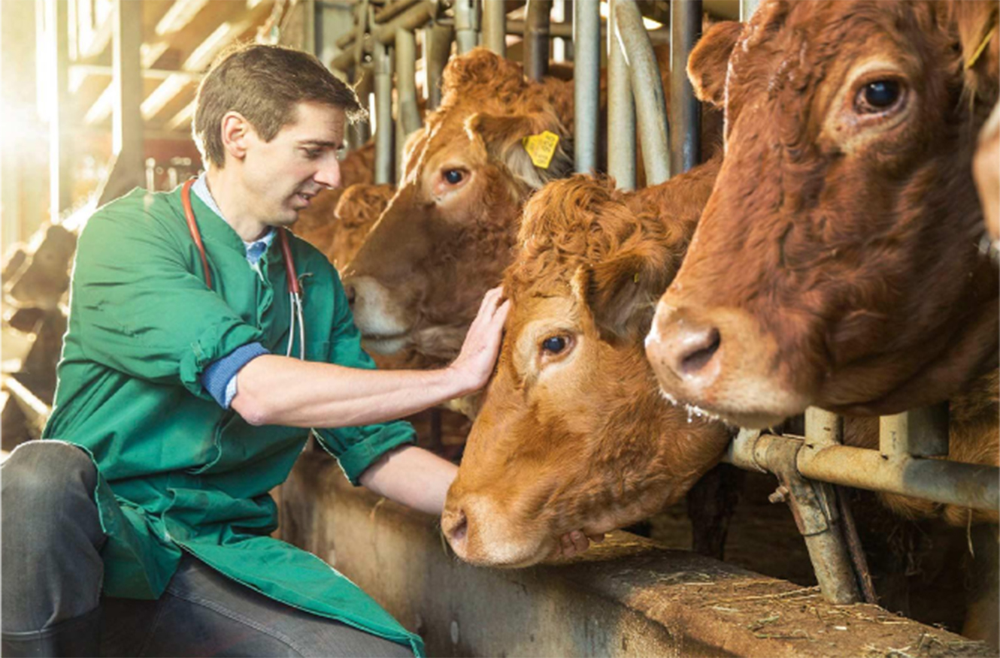

Оценка здоровья и продуктивности животных

Проведение лабораторных исследований крови.
Биохимические показатели в крови отражают здоровье стада, уровень кормления и обменные процессы.
Лабораторные исследования крови предусматривают ежемесячное определение в крови исследуемой группы животных биохимических показателей на автоматическом биохимическом анализаторе Accent 200.
Также определяется содержание витаминов А, Д, Е в крови, которые играют большую роль в иммунологической защите организма и поддержании гомеостаза. Исследования проводятся методом высокоэффективной жидкостной хроматографии.
Селекционный контроль качества молока.
Для племенных хозяйств проведение 1 раз в месяц так называемой контрольной дойки с проверкой результатов в независимой лаборатории — обязательное условие при присвоении статуса организации, также измеряемые показатели учитываются государственными органами при выделении субсидий на развитие племенного животноводства.
Оказание услуг по оценке качества молока в селекционных целях в Лаборатории молочного животноводства осуществляется с помощью Анализатора молока DairySpec Combi.
Производительность Анализатора 1500 проб в день.
Со стороны Центра компетенций молочного животноводства оказывается сервис по отбору проб молока сырого от каждого животного с помощью выездных ветеринарных врачей, штатная численность которых — 3 человека. Пробы сырого молока для анализа доставляются в Лабораторию молочного животноводства с использованием специальных сумок-холодильников Центра компетенций молочного животноводства автомобилями Volkswagen.
Для консервации молока сырого в пробирках используется специализированный консервант.
Контроль качества и безопасности молока сырого.
Лаборатория молочного животноводства обеспечивает подтверждение соответствия молока сырого требованиям ГОСТ Р 52054 «Молоко коровье сырое» и ГОСТ 31449 «Молоко коровье сырое», также требованиям Технических регламентов Таможенного союза, выявление фальсификации немолочными компонентами.
В Лаборатории молочного животноводства внедрены методики государственных стандартов по контролю физико-химических показателей молока сырого (м.д. жира, кислотность, плотность, м.д. белка, др.), также показателей безопасности (соматические клетки).
В Лаборатории молочного животноводства созданы необходимых условий для ее размещения, лаборатория оборудована современными приборами, средствами измерений, в наличии необходимые реактивы, нормативно-техническая документация, а также наличие способности проведения достоверных испытаний.
Сотрудничество по проведению сличительных исследований осуществляется с ветеринарными лабораториями области и аккредитованными центрами, которые имеют аттестат аккредитации на проведение исследований по молоку сырому и кормам.